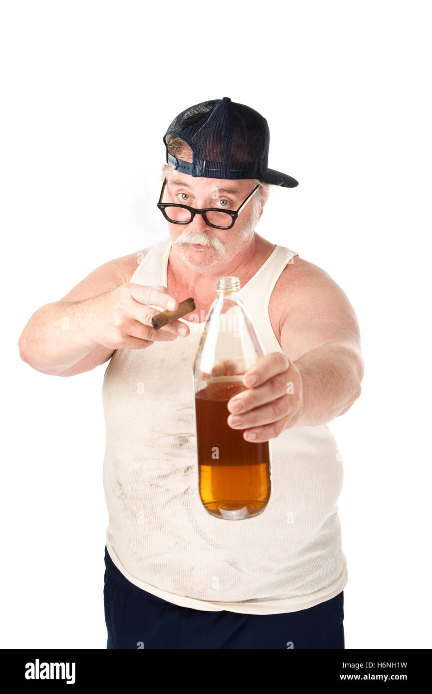

Y este es mi portafolio: Ingeniería de sistemas, arquitectura escalable y experiencias digitales de alto rendimiento.

Soy Amador Suárez, tengo 20 años y soy estudiante de segundo año de la carrera de Ingeniería en Informática.
Me defino con mucha ambición y una vasta imaginación para el desarrollo de proyectos. Destaco fuertemente por mi responsabilidad y dedicación, características que, sumadas a mi visión integral de los sistemas, me otorgan un gran potencial para liderar equipos como jefe de proyectos.
Tecnologías con las que construyo soluciones robustas.
Plataforma basada en 10 microservicios para registro de asistencia, métricas y autenticación.
Diseño y especificación de software (SRS) para una plataforma e-commerce retail altamente escalable.